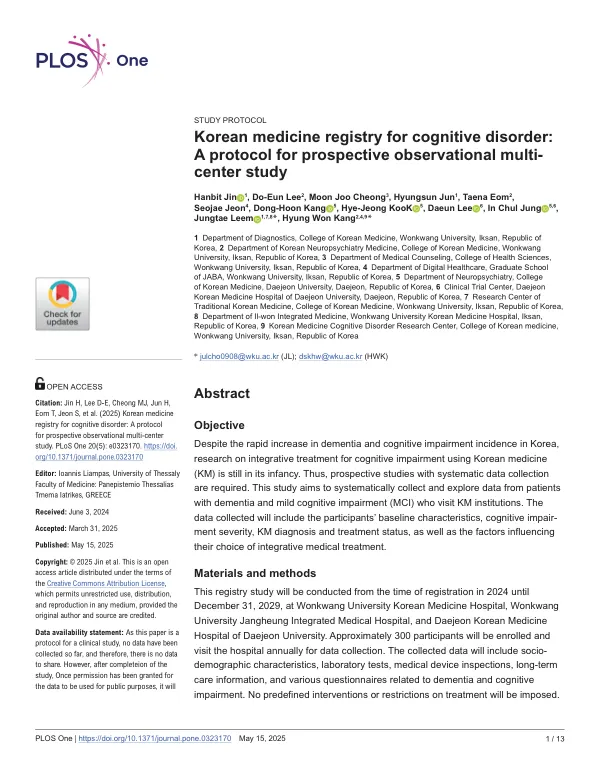

Korean medicine registry for cognitive disorder: A protocol for prospective observational multi-center study
Jin H, Lee DE, Cheong MJ, Jun H, Eom T, Jeon S, Kang DH, KooK HJ, Lee D, Jung IC, Leem J, Kang HW
PLOS One 20(5):e0323170

첫 장 · 오픈액세스First page · open access
논문 소개Summary
한국은 2022년에 65세 이상이 인구의 18%를 넘었고 2060년에는 43.8%가 될 것으로 봅니다. 중앙치매센터의 2022년 보고서는 국내 치매 환자를 약 96만 명, 유병률을 7.3%로 추정했습니다. 그런데 건강보험심사평가원 자료를 쓴 연구에서 치매 환자 가운데 한의 치료를 택한 비율은 1.8%에 그쳤습니다.
한의 의료기관에 인지장애 환자가 오고 있는데도 그들이 누구이고 무엇을 받으며 어떻게 되는지를 체계적으로 모아 둔 자료가 없었습니다. 무작위 대조시험이 근거의 표준이지만 치매처럼 오래 따라가야 하는 병에서는 실사용 자료가 함께 있어야 합니다. 청구자료 코호트는 표본이 크고 기간이 길다는 장점이 있으나 애초에 연구를 위해 모은 자료가 아니라는 한계를 안고 있습니다.
이 논문은 치매와 경도인지장애를 대상으로 한 한의계 첫 레지스트리의 프로토콜입니다. 원광대학교한방병원과 원광대학교장흥통합의료병원, 대전대학교 대전한방병원 세 곳에서 2029년 12월 31일까지 약 300명을 등록하고 해마다 방문받습니다. 대상은 55세부터 85세까지로 DSM-5 기준의 알츠하이머병 또는 혈관성 주요신경인지장애나 경도신경인지장애를 진단받은 분들입니다. 치료를 미리 정해 두지 않아 한의 단독과 표준치료 단독, 병행 세 갈래를 있는 그대로 관찰합니다. 평가는 한국판 몬트리올 인지평가와 간이정신상태검사 2판, 전반적퇴화척도를 주 지표로 삼고 인지장애 변증도구와 삶의 질, 돌봄 부담을 함께 봅니다. 300명이라는 수는 인지평가 점수 변화에 영향을 줄 공변량 15개를 미리 고르고 변수당 20명을 잡아 나온 값입니다.
프로토콜 논문이므로 결과는 없습니다. 개입을 지정하지 않는 관찰연구여서 이상반응은 사망만 중대 이상반응으로 기록하고 나머지는 병력으로 남깁니다. 등록은 2024년 8월 26일에 시작했습니다.
저자들이 밝힌 한계는 분명합니다. 추적 기간이 최대 5년으로 치매의 경과에 견주면 짧고, 무작위 배정이 없어 교란요인이 섞입니다. 개입을 정해 두지 않았으므로 임상의에 따라 치료가 달라집니다. 참여 기관을 대도시와 중소도시, 군 지역에 하나씩 두어 지역 다양성은 담았지만 세 곳뿐이고 모두 대학 한방병원이어서 한의원 진료를 대표하지 못합니다. 그럼에도 한의 변증을 적용해 인지장애 환자를 길게 따라가는 첫 자료라는 점, 뒤에 건강보험 자료와 연계할 계획이라는 점이 이 등록사업의 값입니다.
In 2022 people aged 65 and over passed 18% of the South Korean population, and the figure is projected to reach 43.8% by 2060. The National Institute of Dementia's 2022 report estimates roughly 960,000 people living with dementia in Korea, a prevalence of 7.3%. Yet a study using Health Insurance Review and Assessment Service data found that only 1.8% of dementia patients chose Korean medicine treatment.
Patients with cognitive impairment do come to Korean medicine institutions, but no systematic record existed of who they are, what they receive and how they fare. Randomised controlled trials remain the standard of evidence, yet a condition requiring years of follow-up also needs real-world data. Claims-based cohorts offer large samples and long observation, but carry the limitation of data never collected for research in the first place.
This paper is the protocol for the first registry in the Korean medicine field devoted to dementia and mild cognitive impairment. Three institutions — Wonkwang University Korean Medicine Hospital, Wonkwang University Jangheung Integrated Medical Hospital and Daejeon Korean Medicine Hospital of Daejeon University — will enrol about 300 participants with annual visits through 31 December 2029. Eligible adults are aged 55 to 85 with a DSM-5 diagnosis of major neurocognitive disorder due to Alzheimer's or vascular disease, or of mild neurocognitive disorder. No intervention is prescribed, so Korean medicine alone, standard care alone and combined care are observed as they occur. Primary assessment uses the Korean Montreal Cognitive Assessment, the Korean MMSE-2 Standard Version and the Global Deterioration Scale, alongside a pattern identification tool for cognitive disorder, quality of life and caregiver burden. The figure of 300 comes from pre-selecting 15 covariates expected to affect change in cognitive scores and allowing roughly 20 participants per variable.
Being a protocol, the paper reports no results. Because the registry imposes no intervention, only death is recorded as a serious adverse event and everything else is documented as medical history. Enrolment opened on 26 August 2024.
The authors state their limitations plainly. Follow-up of at most five years is short against the course of dementia, and the absence of random allocation admits confounding. With no predetermined intervention, treatment varies by clinician. One site each in a metropolitan area, a mid-sized city and a rural county captures regional diversity, but three sites — all university-affiliated Korean medicine hospitals — cannot represent primary care clinics. What the registry is worth lies elsewhere: it is the first longitudinal record applying Korean medicine pattern identification to cognitive impairment, and it is designed to be linked later with national health insurance data.
인용Cite
Jin H, Lee DE, Cheong MJ, Jun H, Eom T, Jeon S, Kang DH, KooK HJ, Lee D, Jung IC, Leem J, Kang HW. Korean medicine registry for cognitive disorder: A protocol for prospective observational multi-center study. PLOS One. 2025;20(5):e0323170. doi:10.1371/journal.pone.0323170